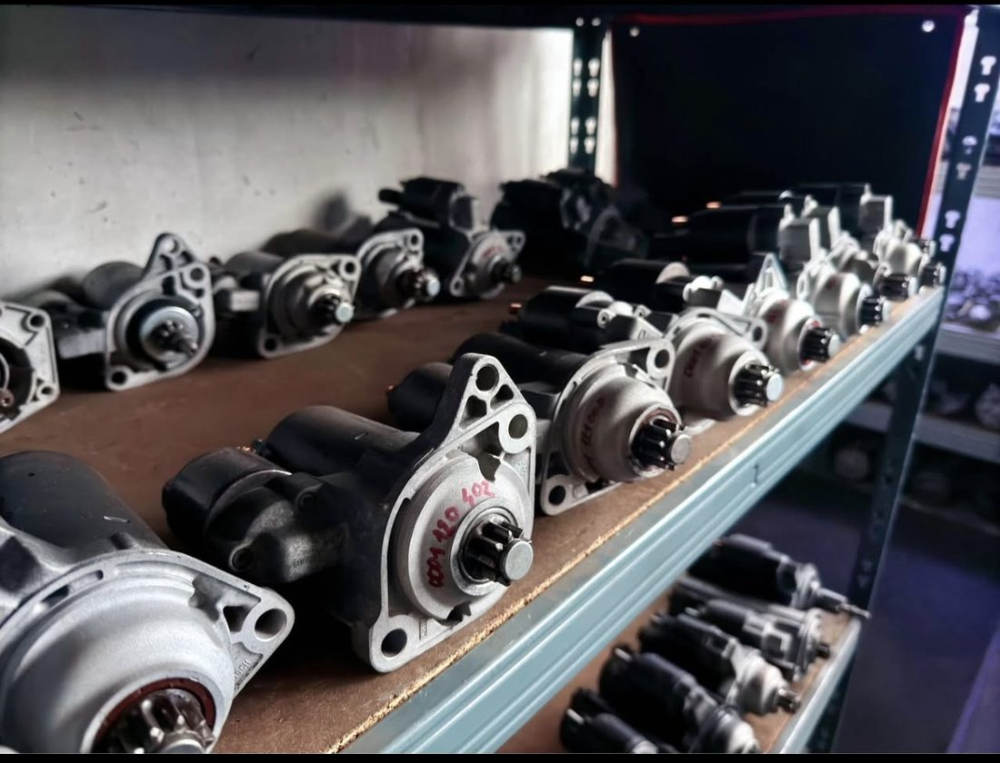

Startéry alternátory
Autoopravna v Novém Boru, v Lipové ulici. Na Googlu ji najdete pod názvem Startéry alternátory.
Po–pá 8–16

Než zavoláte
Tři věci po ruce a termín se domluví na jedno zavolání.
Jaké auto
Značka, model a rok výroby. Stačí, co je v techničáku.
Co se děje
Co auto dělá a odkdy. Když jde o pneumatiky, rozměr z boku pneumatiky.
Kdy se vám to hodí
Dílna má otevřeno v pracovní dny od 8 do 16 hodin.
Dobré vědět
Podle údajů, které má firma na Googlu.
- Bezbariérový vstup
- Bezbariérové parkování
- Recenze zákazníků Přečíst na Googlu
Kontakt
Otevřeno
| Pondělí | 8:00–16:00 |
|---|---|
| Úterý | 8:00–16:00 |
| Středa | 8:00–16:00 |
| Čtvrtek | 8:00–16:00 |
| Pátek | 8:00–16:00 |
| Sobota | zavřeno |
| Neděle | zavřeno |
Objednat opravu
Napište, co auto potřebuje. Zavoláme vám zpátky a domluvíme termín.
Spěchá to? Volejte 608 100 564.